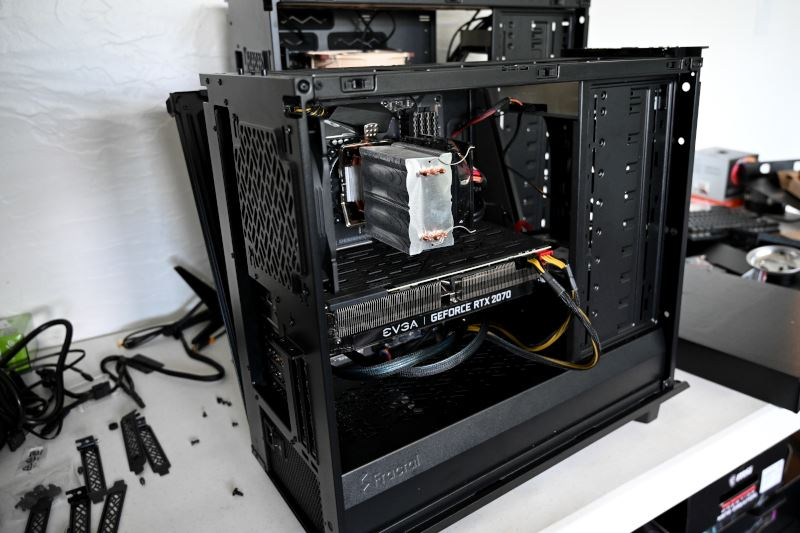
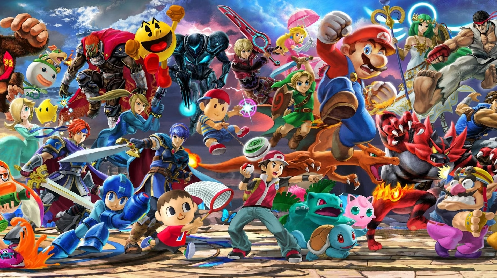

Mes hobbies
Hardware

Passionné par l'assemblage et la maintenance de ordinateurs.
Jeux Vidéos

Passioné par le jeu vidéo depuis l'enfance je me suis beaucoup intéréssé à son histoire et leurs confections.
Montage Vidéo

Passioné par le montage vidéo depuis quelques années, je me suis essayé à la pratique sur quelques petits projets personnels.